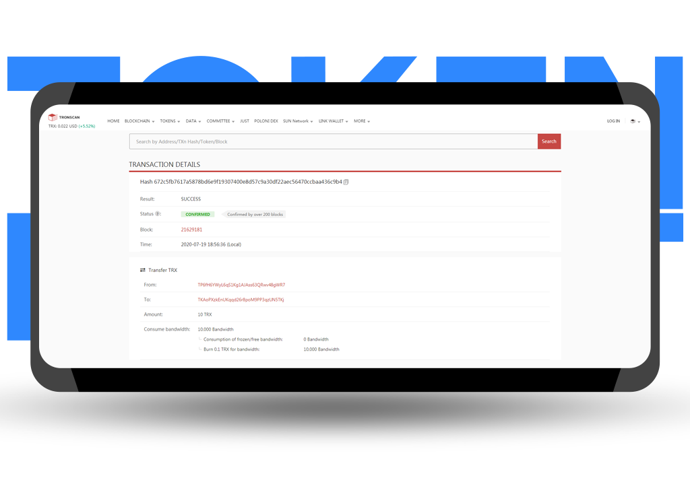

TRON 带宽和能量是什么
TRON 上只有两种资源：带宽（Bandwidth）和 能量（Energy）。你如果只学一次，就记住下面这张表。
TL;DR
带宽 = 发交易的字节数配额，每个账户每天免费 600 字节，USDT 转账只吃 ~345 字节，所以带宽一般不用操心。能量 = 调智能合约时烧的燃料，USDT 是合约资产，每笔转账吃约 65,000 能量（给新地址翻倍）。不够时系统自动烧 TRX 补上。
带宽 = 发交易的字节数配额，每个账户每天免费 600 字节，USDT 转账只吃 ~345 字节，所以带宽一般不用操心。能量 = 调智能合约时烧的燃料，USDT 是合约资产，每笔转账吃约 65,000 能量（给新地址翻倍）。不够时系统自动烧 TRX 补上。
一张对照表
| 带宽 Bandwidth | 能量 Energy | |
|---|---|---|
| 用途 | 发任何交易都要占的基础流量 | 调用智能合约（USDT 转账、DEX、质押等） |
| 一笔 USDT 转账消耗 | 约 345 字节 | 约 65,000（老地址） / 130,000（新地址） |
| 免费额度 | 每个账户每天 600 字节 | 0 |
| 怎么获得 | 默认每日刷新；也可质押 TRX 换更多 | 质押 TRX 或租能量 |
| 不够时怎么办 | 自动按 1,000 sun/字节 烧 TRX | 自动按 100 sun/能量 烧 TRX（2025-08 Proposal #104 减半后价） |
| 2026-04 单次 USDT 转账成本 | 345 × 1,000 sun ≈ 0.345 TRX ≈ $0.11（极少用到，日常用免费额度） | 65,000 × 100 sun ≈ 6.5 TRX 合约基础 + 对方创建存储（如需）—— 实扣 13 TRX / 27 TRX |
为什么新手 99% 时间只需要管能量
因为带宽每天免费 600，足够发两笔 USDT 转账（2 × 345 = 690，略超时会自动从 TRX 补 ~0.1 TRX，基本没感觉）。真正让你卡住的一定是能量：USDT 作为合约，每笔都必须烧几万到十几万能量，直接把 TRX 余额打空是常态。
怎么在钱包里看自己的资源
- TronLink：主界面右上角「资源」。
- imToken：TRX 详情页 → 「资源管理」。
- OKX Wallet：TRON 主页 → 「Energy & Bandwidth」。
- 最通用：tronscan.org 搜你的 T 开头地址，首页会直接显示剩余。

一个常见误解
很多新手以为「带宽」「能量」是某种 token 可以买卖 —— 不是。它们是账户级配额，只能用质押产生或通过第三方平台临时「借」。你看到有人说「买能量」，实际是指向第三方平台付 TRX，平台代付能量配额给你的地址。
安全提醒
正规租能量服务只要你的收款地址。任何要你填助记词、私钥、Keystore 文件的「能量服务」都是钓鱼。参见 TRON 能量指南对租能量平台的清单。
正规租能量服务只要你的收款地址。任何要你填助记词、私钥、Keystore 文件的「能量服务」都是钓鱼。参见 TRON 能量指南对租能量平台的清单。
参考资料
- imToken：如何获得带宽与能量 — 官方从钱包角度讲每天能量 / 带宽怎么来、怎么看、怎么补。
- TRON Developer Docs: Resource Model — 带宽和能量的定义、免费额度、燃烧和质押规则。
- TronScan Energy Consumption — 查询链上资源消耗与价格变化。